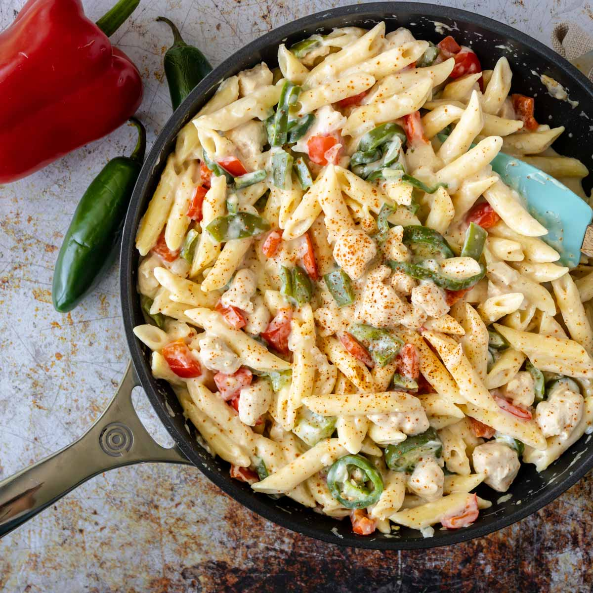

Rattle snake pasta
So I first tried this at Uno's (Shout out to Uno's) and the flavor was insane. Since then
however its been lack luster. I love the jalepeno's in them however spicy is user variated so
make it to your liking.
Rattle snake pasta has a creamy consistency that when garnished with seasoning you have a
palatable presentation.
Ingredients
- Pasta
- 2 - Tablespoons vegetable oil
- 3/4 - cup sliced mushrooms (Optional)
- 1/2 - cup zucchini, cut diagonally into 1/2 inch thick slices
- 1/2 - cup of chopped yellow squash
- 1/4 - cup of sliced onions
- 1 & 1/4 - cups heavy cream
- 1 Jalapeno pepper, seeded and minced
- 1 - tablespoon Dijon mustard
- 1 - tablespoon Cajun seasoning
- 1 - teaspoon minced garlic
- 1/2 - cup grated Parmesan cheese
- 1/2 - cup diced tomatoes
- Salt and pepper to taste
- 3 - tablespoons vegetable oil
- 1 - pound rattlesnake meat, cut into 1/2 inch pieces. You can totally substitute this
for chicken.
- All-purpose flour for dredging
Steps
- Cook pasta: Fill a large pot with lightly salted water and bring to a rolling boil. Cook fettuccine in boiling water until tender yet firm to the bite, about 8 minutes; drain.
- Make sauce: Heat oil in a large skillet over medium-high heat. Cook and stir mushrooms, zucchini, squash, and onions in hot oil until vegetables are heated through but still firm, about 5 minutes. Pour in cream and cooked fettuccine; simmer for 4 minutes. Mix in jalapeño, mustard, Cajun seasoning, and garlic; cook for 1 minute. Stir in Parmesan cheese and tomatoes. Reduce heat to low to keep warm.
- Meanwhile, cook rattlesnake: Heat oil in a large skillet over high heat. Dredge rattlesnake meat in flour and fry in hot oil until cooked through, about 5 minutes. An instant-read thermometer inserted into the center of meat should read at least 165 degrees F (74 degrees C). Arrange on top of pasta to serve.